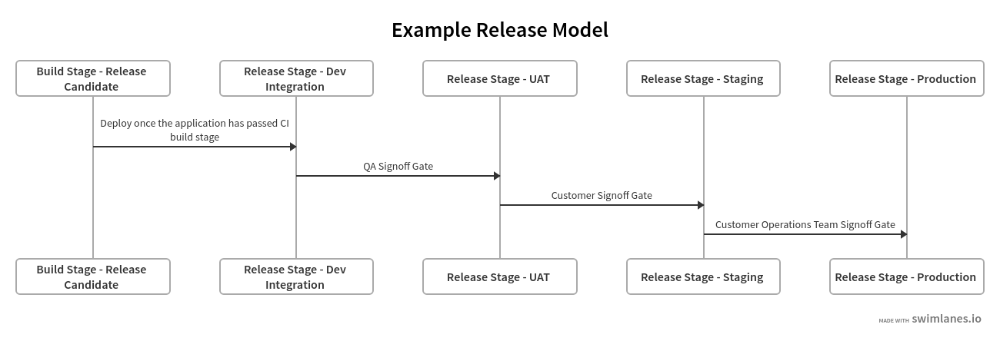
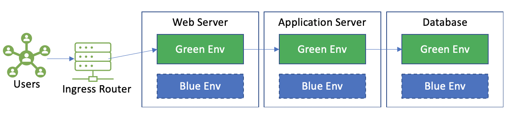
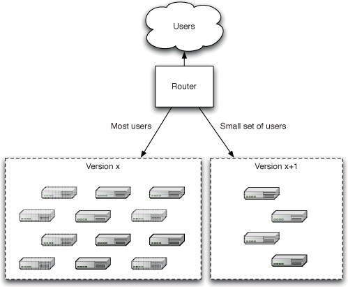

Entrega Contínua
A inspiração por trás da entrega contínua é entregar constantemente software valioso para usuários e desenvolvedores com mais frequência. Aplicar os princípios e práticas delineados neste readme ajudará você a reduzir riscos, eliminar operações manuais e aumentar a qualidade e a confiança.
Implantar software envolve os seguintes princípios:
- Prover e gerenciar o ambiente em nuvem em tempo de execução para sua aplicação (recursos em nuvem, infraestrutura, hardware, serviços, etc).
- Instalar a versão da aplicação alvo em todos os ambientes em nuvem.
- Configurar sua aplicação, incluindo quaisquer dados necessários.
Um pipeline de entrega contínua é uma manifestação automatizada de seu processo para otimizar esses princípios de maneira consistente e repetível.
Objetivo
- Seguir as melhores práticas da indústria para entregar mudanças de software para clientes e desenvolvedores.
- Estabelecer consistência para os princípios orientadores e melhores práticas ao montar fluxos de entrega contínua.
Orientação Geral
Definir uma Estratégia de Lançamento
É importante estabelecer um entendimento comum entre o Líder de Desenvolvimento e as partes interessadas da aplicação sobre a estratégia/design de lançamento durante a fase de planejamento de um projeto. Esse entendimento comum inclui a implantação e manutenção da aplicação ao longo de seu ciclo de vida de desenvolvimento de software.
Princípios da Estratégia de Lançamento
Continuous Delivery por Jez Humble e David Farley cobre as principais considerações a seguir ao criar uma estratégia de lançamento:
- Responsáveis pelos implantes em cada ambiente, bem como responsáveis pelo lançamento.
- Uma estratégia de gerenciamento de ativos e configurações.
- Enumeração dos ambientes disponíveis para aceitação, capacidade, integração e teste de aceitação do usuário, e o processo pelo qual as compilações serão movidas por esses ambientes.
- Uma descrição dos processos a serem seguidos para implantação nos ambientes de teste e produção, como solicitações de alteração a serem abertas e aprovações a serem concedidas.
- Uma discussão sobre o método pelo qual a configuração em tempo de implantação e em tempo de execução da aplicação será gerenciada, e como isso se relaciona com o processo de implantação automatizada.
- _Descrição da integração com quaisquer sistemas externos. Em que estágio e como eles são testados como parte de um lançamento? Como o operador técnico se comunica com o provedor em caso de problema?
- _Um plano de recuperação de desastres para que o estado da aplicação possa ser recuperado após um desastre. Quais etapas serão necessárias para reiniciar ou reimplementar a aplicação em caso de falha.
- _Dimensionamento e planejamento de capacidade de produção: Quanta dados sua aplicação ao vivo criará? Quantos arquivos de log ou bancos de dados você precisará? Quanta largura de banda e espaço em disco você precisará? Qual latência os clientes esperam?
- Como funciona a implantação inicial em produção.
- Como corrigir defeitos e aplicar correções no ambiente de produção será tratado.
- Como as atualizações do ambiente de produção serão tratadas, incluindo a migração de dados. Como as atualizações serão realizadas na aplicação sem destruir seu estado.
Lançamento da Aplicação e Promoção de Ambiente
Seu processo de manifestação de lançamento deve pegar o artefato de construção implantável criado em sua etapa de confirmação e implantá-lo em todos os ambientes em nuvem, começando pelo ambiente de teste.
O ambiente de teste (muitas vezes chamado de Integração) atua como um portão para validar se sua suíte de testes é bem-sucedida para todos os candidatos a lançamento. Essa validação deve sempre começar em um ambiente de teste enquanto inspeciona o lançamento implantado a partir do branch de feature/liberação contendo suas mudanças de código.
As mudanças de código lançadas no ambiente de teste normalmente têm como alvo o branch principal (quando usando trunk) ou o branch de lançamento (quando usando gitflow).
O Primeiro Lançamento
O primeiro lançamento de qualquer aplicação deve ser apresentado ao cliente em um ambiente semelhante à produção (UAT) para obter feedback rapidamente. O ambiente de UAT é usado para obter a aceitação do proprietário do produto para, em última análise, promover o lançamento para produção.
Critérios para um ambiente semelhante à produção
- Executa o mesmo sistema operacional que a produção.
- Tem o mesmo software instalado que a produção.
- É dimensionado e configurado da mesma forma que a produção.
- Reflete a topologia de rede da produção.
- Testes de carga simulados semelhantes à produção são executados após um lançamento para identificar qualquer degradação de latência ou throughput.
Modelagem de seu Pipeline de Lançamento
É crucial modelar seu processo de teste e lançamento para estabelecer um entendimento comum entre os engenheiros de aplicação e as partes interessadas do cliente. Alinhar especificamente as expectativas sobre quantos ambientes em nuvem precisam ser pré-provisionados, bem como definir os papéis e responsabilidades dos portões de aprovação.

Considerações na Modelagem do Pipeline de Lançamento
- Representar todas as etapas pelas quais uma mudança na aplicação precisaria passar antes de ser lançada na produção.
- Definir todos os controles de portões de lançamento.
- Determinar grupos de Cloud RBAC específicos do cliente que têm autoridade para aprovar candidatos a lançamento por ambiente.
Estágios do Pipeline de Lançamento
Os estágios em seu fluxo de trabalho de lançamento estão testando, em última instância, uma versão de sua aplicação para validar se ela pode ser lançada de acordo com seus critérios de aceitação. O pipeline de lançamento deve considerar as seguintes condições:
- Seleção de Lançamento: O desenvolvedor que realiza o
teste da aplicação deve ter a capacidade de selecionar qual versão de lançamento implantar no ambiente de teste. * Implantação - Libere o artefato de implantação da aplicação (criado na etapa CI) para o ambiente em nuvem de destino. * Configuração - As aplicações devem ser configuradas de forma consistente em todos os ambientes. Essa configuração é aplicada no momento da implantação. Dados sensíveis, como segredos de aplicação e certificados, devem ser gerenciados em um repositório totalmente gerenciado de chaves e segredos (por exemplo, Key Vault, KMS). Quaisquer segredos usados pela aplicação devem ser obtidos internamente pela própria aplicação. Os segredos da aplicação não devem ser expostos no ambiente de execução. Incentivamos os princípios do Modelo de 12 Fatores, especialmente quando se trata de gerenciamento de configuração. * Migração de Dados - Pré-popular o estado da aplicação e/ou registros de dados necessários para o ambiente de execução. Isso pode incluir dados de teste necessários para sua suíte de testes de integração de ponta a ponta. * Teste de Validade de Implantação. Seu teste de validade também deve verificar se sua aplicação está apontando para a configuração correta (por exemplo, produção apontando para um banco de dados UAT). * Realizar cenários de teste de aceitação manuais ou automatizados. * Aprovar o portão de lançamento para promover a versão da aplicação para o ambiente em nuvem de destino. Essa promoção também deve incluir o estado de configuração do ambiente (por exemplo, novas configurações de ambiente, flags de recursos, etc).
Aquecimento do Lançamento ao Vivo
Um lançamento deve estar em execução por um período de tempo antes de ser considerado ativo e permitido para aceitar o tráfego do usuário. Essas atividades de aquecimento podem incluir o pré-preenchimento de servidores de aplicação e bancos de dados com qualquer cache dependente, bem como estabelecer todas as conexões de serviço (por exemplo, alocações de pool de conexão, etc).
Lançamentos Pré-produção
Os candidatos a lançamento da aplicação devem ser implantados em um ambiente de staging semelhante ao de produção para realização de testes manuais/automatizados finais (incluindo testes de capacidade). Seus ambientes em nuvem de produção e staging/pré-produção devem ser configurados no início do projeto.
O aquecimento da aplicação deve ser uma medição quantificada que é validada como parte de seus testes de validação pré-produção.
Rollback de Lançamentos
Sua estratégia de lançamento deve considerar cenários de rollback no caso de falhas inesperadas após uma implantação.
O rollback de lançamentos pode ficar complicado, especialmente quando ocorrem alterações em registros/objetos de banco de dados como resultado de sua implantação (seja inadvertidamente ou intencionalmente). Se não houver alterações de dados que precisem ser revertidas, você pode simplesmente acionar um novo candidato a lançamento para a última versão conhecida da produção e promover esse lançamento ao longo de seu pipeline de entrega contínua.
Para cenários de rollback envolvendo alterações de dados, existem várias abordagens para mitigar isso, que estão fora do escopo deste guia. Algumas envolvem a versão de registros de banco de dados, registro no tempo de registros/objetos de banco de dados, etc. Todos os arquivos de dados e bancos de dados devem ser copiados de backup antes de cada lançamento, para que possam ser restaurados. A estratégia de mitigação para esse cenário variará entre nossos projetos. A expectativa é que essa estratégia de mitigação seja abordada como parte de sua estratégia de lançamento.
Outra abordagem a considerar ao projetar sua estratégia de lançamento são os anéis de implantação. Essa abordagem simplifica cenários de rollback ao limitar o impacto de seu lançamento nos usuários finais, implantando e validando gradualmente suas alterações na produção.
Lançamentos sem Interrupção
Uma implantação quente segue um processo de troca de usuários de uma versão para outra sem impactar a experiência do usuário. Como exemplo, os serviços gerenciados pela Azure permitem que os desenvolvedores validem as mudanças do aplicativo em um slot de implantação de teste antes de trocá-lo pelo slot de produção. A troca de slots de serviço de aplicativo também pode ser totalmente automatizada assim que o slot de origem estiver totalmente aquecido (e a troca automática estiver ativada). A troca de slots também simplifica a reversão de lançamentos assim que um operador técnico restaurar os slots para seus estados pré-troca.
O Kubernetes oferece suporte nativo a atualizações contínuas.
Implantações Azuis/Verdes
Azul/Verde é uma técnica de implantação que reduz o tempo de inatividade ao executar duas instâncias idênticas de um ambiente de produção chamadas Azul e Verde.
Apenas um desses ambientes aceita tráfego de produção ao vivo de cada vez.

No exemplo acima, o tráfego de produção ao vivo é direcionado para o ambiente Verde. Durante os lançamentos da aplicação, a nova versão é implantada no ambiente Azul, o que ocorre independentemente do ambiente Verde. O tráfego ao vivo não é afetado pelas implantações do ambiente Azul. Você pode direcionar sua suíte de testes de ponta a ponta ao ambiente Azul como um de seus pontos de verificação de teste.
Migrar os usuários para a nova versão do aplicativo é tão simples quanto alterar a configuração do roteador para direcionar todo o tráfego para o ambiente Azul.
Essa técnica simplifica cenários de rollback, pois você pode simplesmente altern
ar o roteador de volta para o Verde.
Provedores de banco de dados como Cosmos e Azure SQL oferecem suporte nativo à replicação de dados para ajudar a habilitar ambientes de banco de dados Azul/Verde totalmente sincronizados.
Implantações de Lançamento Canary
As implantações Canary permitem que equipes de desenvolvimento obtenham feedback mais rápido ao implantar novos recursos na produção. Esses lançamentos são implantados em um subconjunto de nós de produção (onde nenhum usuário é direcionado) para coletar insights precoces sobre testes de capacidade, completude funcional e impacto.

Uma vez concluídos os testes de capacidade e fumaça, você pode direcionar um pequeno subconjunto de usuários para os nós de produção que hospedam o candidato a lançamento.
As implantações Canary simplificam os rollbacks, pois você pode evitar direcionar os usuários para versões ruins do aplicativo.
Tente limitar o número de versões de sua aplicação em execução paralelamente na produção, pois isso pode complicar os controles de manutenção e monitoramento.
Soluções de Baixo Código
Soluções de baixo código aumentaram sua participação nas aplicações e processos e, por causa disso, é necessário uma adequada combinação de disciplinas para melhorar seu desenvolvimento.
Aqui está um guia para entrega contínua para Soluções de Baixo Código.
Referências
- Entrega Contínua por Jez Humble e David Farley.
- Integração Contínua vs. Entrega Contínua vs. Implantação Contínua
- Anéis de Implantação
Ferramentas
Confira as seguintes ferramentas que podem ajudar nas melhores práticas de Entrega Contínua mencionadas acima:
- Flux para GitOps.
- Tekton para pipelines nativas do Kubernetes. É importante observar que o Jenkins-X usa o Tekton em seu funcionamento interno.
- Argo Workflows para gerenciamento de fluxo de trabalho.
- Flagger para lançamentos poderosos nativos do Kubernetes, incluindo abordagens de implantação azul/verde, canário e testes A/B.
- Embora não diretamente relacionado à Entrega Contínua, você pode explorar o jsonnet, uma linguagem de modelagem que ajuda a reduzir a redundância em manifestos YAML/JSON e promove a reutilização.
- Para soluções de baixo código, você pode seguir o guia de entrega contínua para Soluções de Baixo Código.